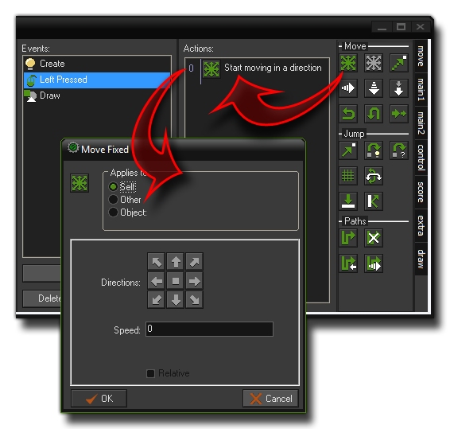
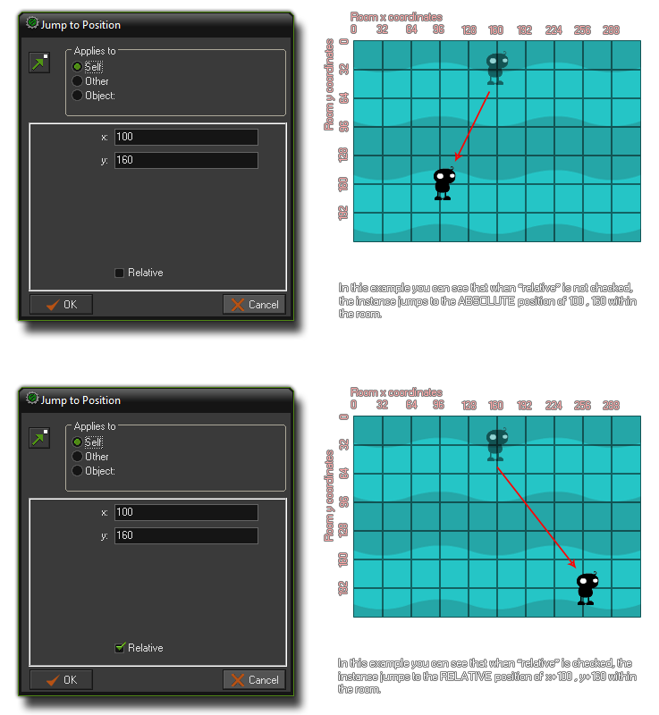

Actions
This section of the manual outlines what actions are and how to use them in GameMaker:Studio.
One of the things that makes GameMaker:Studio so unique is the ease with which simple commands and functions can be made to manipulate your game world using actions. These actions
come in the form of action sets, with each set having a number of icons that you can drag and drop into an object event to create behaviours for that object (this is commonly called just "DnD", in reference
to the drag'n'drop aspect). Here are the action sets in full:

All the actions are found in the tabbed pages at the right of the object property form, and as you can see there are seven tabs full of actions for you to use to help create your games. If you require a brief reminder
of what each action does while working with GameMaker:Studio you can place the mouse over any of them and a short descriptive text will pop up, and for a more in-depth explanation each tab is explained
elsewhere in the manual (see the end of this section).
Adding Actions To An Event
To put an action in an event, just drag it from the tabbed pages to the action list in the object as shown in the image below :

From there you can then edit the details of the action, change the order of actions within the list (by clicking and dragging), copy, paste and even delete actions too. You can also select multiple actions if need be and they can also
be dragged or copied from one object's action list to that of another!
Now, as you can see above, when you drop an action in the action list, normally a window will pop-up in which you can fill in certain parameters for the action, and you can find a description of each of these actions and parameters
in the sections of the manual listed at the end of this page. However, almost all of them have a two things in common which we will deal with here, the first of them being the box at the top that says "Applies To :". This is to tell
GameMaker:Studio which instances are to be considered as "running" this action and the default is self, which is the instance of the object that has the action in its action list. Most of the time, this is what you
want, but in the case of a collision event, you can also also have an action that applies to the other instance involved in the collision, and for that you would change "Applies to :" to other (this is only valid for
the collision event). Finally you have object which means that the action will be applied to all instances of a particular object that are active in the current room. In this way you could change all obj_red_balls into
obj_blue_balls, for example.
The consistent part of most actions is the check-box labeled Relative. When you check this box you are telling GameMaker:Studio that the values you input to the fields of the action are to be relative to the original
value rather than being absolute. Here is an image to further explain what this means, and as you will see, checking "relative" can have a big influence on the result of the action!

Bookmarking Actions
When you add actions to a choosen event, these are numbered down the left hand side of the action list. this is just like when working with code, where each line gets it's own line number, and is designed to make
debugging and finding your way around complex constructions and action lists. You can "bookmark" a position within the action list too so that with the press of a number key on your keyboard you are taken directly
to the action that was previously bookmarked, as long as the object has not been closed (closing the object properties will clear all current bookmarks).
To bookmark an action, simply click on it once to slect it with the mouse, then press <CONTROL> + <NUMBER> to add a bookmark at that point (The number is from 0 - 9 and is any one of the
number keys at the top of your keyboard). It should be noted that the bookmarks are on a "per object" basis, so each object can have ten bookmarks as long as it is open for editing. From the moment you create
a bookmark onwards, you can simply press the number key and you will be taken to the action that the bookmark references, and if you wish to remove a bookmark, then you can simply press <CONTROL>
+ <NUMBER> again which will clear the numebr specified.
This functionality can be switched of in the Scripts Preferences, but note that doing so will also switch off line numbering for code boxes
and the script editor.
Information on the individual actions found in each set can be found in the following sections :
- Move Actions
- Main Actions, Set 1
- Main Actions, Set 2
- Control Actions
- Score Actions
- Extra Actions
- Draw Actions
- Using Variables and Expressions in Actions
© Copyright YoYo Games Ltd. 2013 All Rights Reserved